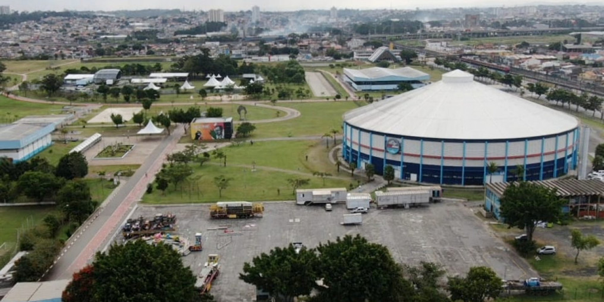
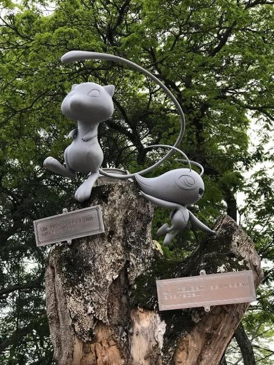
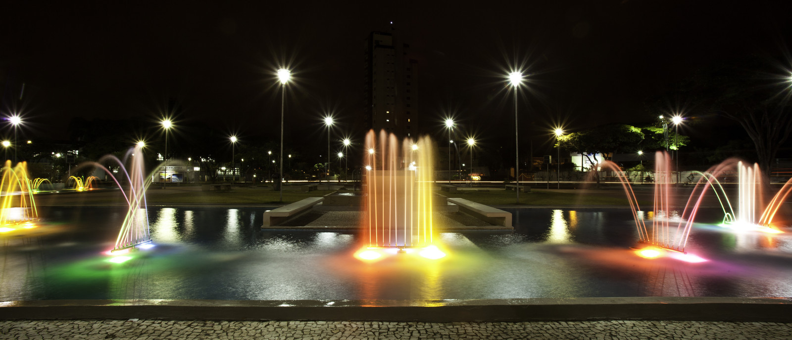

Parque Max Feffer
Localizado na Avenida Senador Roberto Simonsen, 90, o Parque Max Feffer oferece diversas atividades recreativas, como ciclovias, quadras esportivas e eventos culturais.
Praça dos Pokémons
Conhecida como a capital nacional dos Pokémons, a praça possui estátuas temáticas que atraem fãs de todas as idades.
Praça da Prefeitura
Um espaço revitalizado que oferece áreas de lazer e eventos comunitários para toda a população.